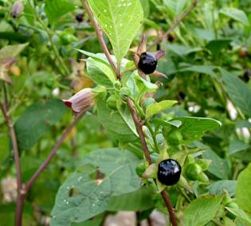
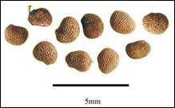

HORT 282 :: Lecture 28 :: BELLADONNA

BELLADONNA
(Atropa belladonna L.) Family: Solanaceae
 Belladonna (Atropa belladonna C.B. Clarke.) belongs to the family Solanaceae. Atrops is commonly called as ‘Deadly nighShade’. The commercial drug is obtained from the leaves, flowering tops and roots of A.belladonna. Leaves and roots of belladonna contain tropane alkaloids whose concentration varies from 0.13 to 0.70 per cent (average 0.45%). Belladonna leaves are widely used for the manufacture of tinctures and plasters. The drug serves as an anodyne, sedative, stimulant, antidiuretic, antiasthmtic, antispasmodic, anti-inflammatory. It is also used in the treatment of renal and bilary colic, stomach disorders and to stop sweating. The roots are primarily used in the external treatment of gout, rheumatism and other affiliations.
Soil
Belladonna grows well in deep fertile soils of medium texture, which are rich in humus. Heavy clay soils which are water-logged should be avoided to cultivate this crop.
Climate
It is a temperate crop. It behaves as a perennial in temperate climates and gives maximum herbage and alkaloid yield. In sub-tropical areas, it can be grown as a winter crop. However, the plant behaves as an annual as it dies during the summer months and hence the yield is poor.
Varieties
There are no named varieties in this crop.
Cultivation
Propagation
The crop is propagated through seeds extracted from berries collected usually from September-November. Seeds may be treated with 80 per cent sulphuric acid at the time of sowing for 2 minutes to improve the germination.
Nursery raising
It can be cultivated by direct sowing, but raising nursery gives best results. The nursery may be raised from the second week of May to the end of autumn (September to October) under sufficient shade. The land should be ploughed well so as to give a fine tilth. Raised beds of size 3m x 1m surrounded by drainage and irrigation channels to be made and apply well decomposed FYM to the soil. Seeds pretreated with fungicides like Dithane M-45 or Agallol (10 g per kg of seeds) may be mixed with fine soil (1:4 ratios) and broadcasting in the nursery beds. Cover the seed beds with a layer of FYM and then with straw. Watering of beds should be done immediately after sowing with a rose can.
The seeds germinate in 3 weeks time. Seedlings will be ready for planting in the field when they attain a height of 15-20 cm after 8-12 weeks.
Transplanting
The ideal time for planting in the field is March-April or October-November. Before planting, the seedlings are treated with fungicide like Agallol. Seedlings are planted at a spacing of 50-60 cm in rows kept 60-70 cm apart. It is always safer to plant the seedlings on raised beds with 1 m wide strips or ridges as it avoids water logging and facilitates irrigation. The field may be irrigated immediately after transplanting.
Harvesting, Processing and Yield
The first harvest of the leaves is available three month after planting. Harvesting should be done as soon as the plants start flowering, as it is the period when alkaloid content is higher. The leaves are cut with the help of pruning scissors.
Leaves are dried immediately after the harvest under shade or sun or artificial heat with or without fans for air circulation. Leaves should be turned over frequently while drying.
The roots are also harvested after 3 years. After the harvest, they are washed, cut into 4 inches length, split length wise if thick and shade or sun dried.
During the first year an average of 1000 kg of dry herb is obtained. The yield increases to 1500 kg per hectare during 2nd and 3rd year. The yield of dry roots will vary from 170 to 335 kg per hectare.
***************
- Atropin is obtained from _____________
- Belaclona belongs to the family ______________
- Economic part of Beladona is ______________
- Beladona is a _______________ crop
- Tropane alkaloids have medicinal properties of ________________
| Download this lecture as PDF here |